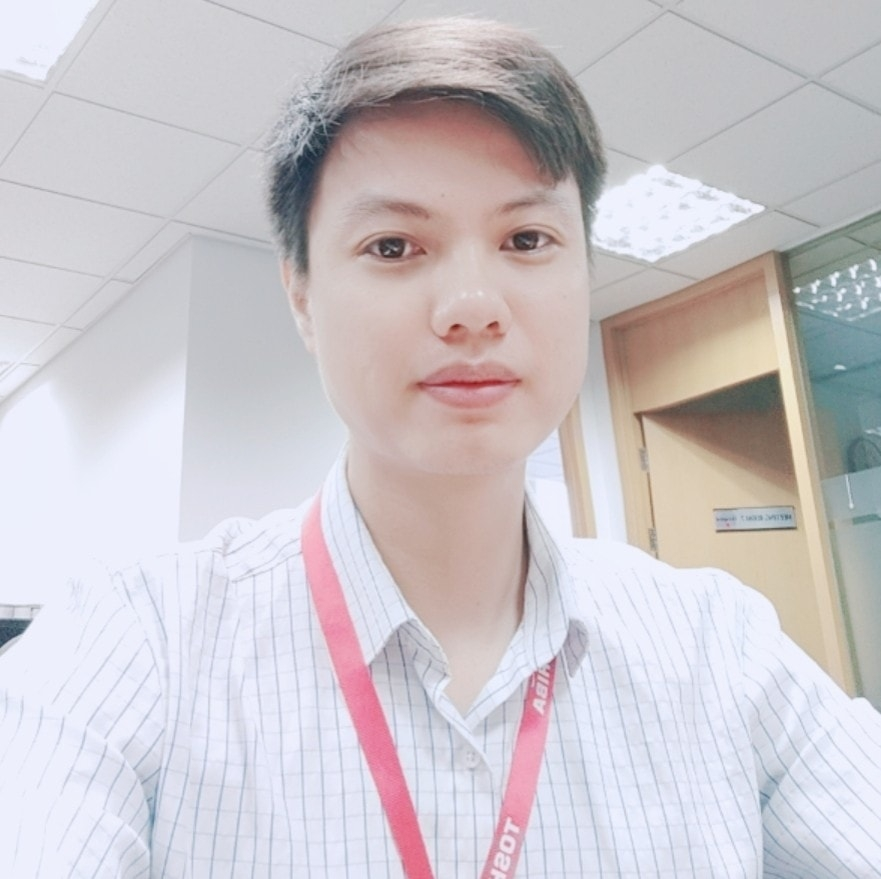

Linux distribution engineering
Designing maintainable Yocto and Debian-based systems with clean layers, reproducible builds and practical upgrade paths.
Hello, I’m Nguyen Dat Tho.
Embedded Linux Engineer with 11+ years turning hardware, kernels, build systems and delivery pipelines into dependable products.

$ platform status
✓ build: reproducible
✓ updates: fail-safe
✓ validation: automated
I work across the layers that make embedded products reliable: distribution architecture, hardware enablement, automated delivery, field updates and long-term maintenance.
Designing maintainable Yocto and Debian-based systems with clean layers, reproducible builds and practical upgrade paths.
Tracing difficult problems through bootloaders, kernels, drivers and userspace across Qualcomm, NVIDIA, BeagleBone and Raspberry Pi platforms.
Building fast feedback loops with Jenkins, GitLab CI, Docker, LAVA and Fuego — from every commit to tests on real hardware.
Supporting stable-release transitions, CVE tracking, license compliance and fail-safe OTA updates for long-lived products.
LG Electronics Development Vietnam
Toshiba Software Development Vietnam
Toshiba Software Development Vietnam
Toshiba Software Development Vietnam
Comfortable moving between low-level debugging, build metadata, automation code and release infrastructure to solve the complete problem.
Production experience across industrial, infrastructure and consumer platform software.
Full-cycle Buster to Bullseye and Bullseye to Bookworm migrations.
I contribute technical improvements back to the ecosystems behind the products I build.
Upstream changes to the core metadata and build machinery at the heart of Yocto-based Linux distributions.
Browse contributions upstreamRecipe and layer improvements for the community-maintained metadata used across embedded Linux products.
Browse contributionsFormal training in electronics and telecommunications, strengthened by a career in hands-on systems engineering.
Bachelor of Engineering · Electronics and Telecommunications
I’m open to embedded Linux roles and platform engineering challenges where reliability, maintainability and thoughtful execution matter.